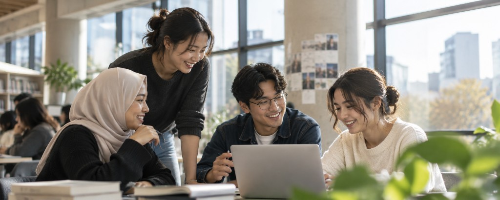

사람과 교육을 연결합니다
2010년 다문화 분야 활동을 시작한 이후, 2013년 법인을 설립하고 2014년 고용노동부 인증 사회적기업으로 지정되었습니다.
| 법인명 | 참조은다문화 주식회사 |
|---|---|
| 부설 | 한국인재개발원 |
| 소재지 | 부산 동래구 금강로 70 참조은빌딩 5·7층 |

설립이념
우리 모두 각자가 가진 능력과 개성을 발휘하여, 원하는 분야의 꿈과 미래를 만들어 나가면 좋겠습니다.

01–02평생교육 · 직업역량생애주기 학습과 현장 실무

03–04전문인력 · 사회통합강사 양성과 KIIP

05–06교육격차 · 지역사회맞춤 교육과 지역 연계
연혁
2010년부터 이어 온 길
2010
다문화 네트워크 부산지부 시작
2011
법무부 사회통합프로그램 운영기관
2018
조기적응 지원센터 지정
2026
동포체류지원센터 신규 지정
| 2013 | 참조은다문화(주) 독립법인 설립 |
|---|---|
| 2014 | 고용노동부 인증 사회적기업 |
| 2016 | 언론기관부설 평생교육시설 등록 |
| 2023–25 | 김해대 · 방송대 · 동의과학대 협약 |
조직
이사회에서 사업부까지
이사회운영 방향 결정
대표기관 대표
3팀경영 · 상담 · 총괄
3부교육 · 복지 · 평생